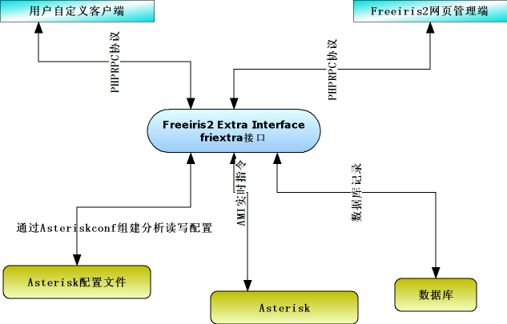

"Freeiris2 Extra Interface扩展接口", 是用于实现freeiris2整个系统控制和管理的核心接口. freeiris2自己的程序也是由此接口实现的管理. 我们这个接口采用的是PHPRPC技术实现的。关于接口的实现技术，这里就不做过多的讲解查看http://www.phprpc.org了解更多的情况。
friextra有啥
friextra目录,既是freeiris2的核心,也是所有接口所在.里面有很多文件，但是其中有一个文件是主文件。叫rpcpbx.php这个主文件，实现引导其他rpcpbx_xxx.php文件.所以,freeiris2的接口也可以称为rpcpbx.php.
访问的资源名称为http://hostipaddress/friextra/rpcpbx.php
经过向该资源请求,从而访问和控制整个freeiris2
freeiris2 kiang web客户端
我们所看到的freeiris2的那个控制界面,实际上是一个客户端程序，他通过PHPRPC协议的接口访问friextra. 也就是说其实他可以安装在windows下而不需要跟freeiris2一起运行的。
如何编写服务端程序
将你的代码命名为rpcpbx_你的名字.php并且存放在/freeiris2/friextra/目录中，rpcpbx会自动加载这个代码.
服务端代码由于相对比较复杂,我们这里不做讲解，请你查看代码自身的注释说明.(谁来为此部分写一份说明)
如何编写客户端程序
由于PHPRPC协议支持10几种语言，我们暂时还不能一一讲解.(谁来为此部分写一份说明)
我想看friextra都有什么接口
friextra的接口都在 Freeiris2 Extra Interface 接口开发手册 已经说明, 可以去查看
关于fripaper项目说明
freeiris2有一个子项目在utils/fripaper目录下，这个项目主要是完成根据friextra的注释生成接口开发手册. 所以在编写friextra服务端接口的时候请参考fripaper里的注释写发. 如果想重新生成整个接口开发手册，请执行cd /freeiris2/utils/fripaper再执行./mkfriextra